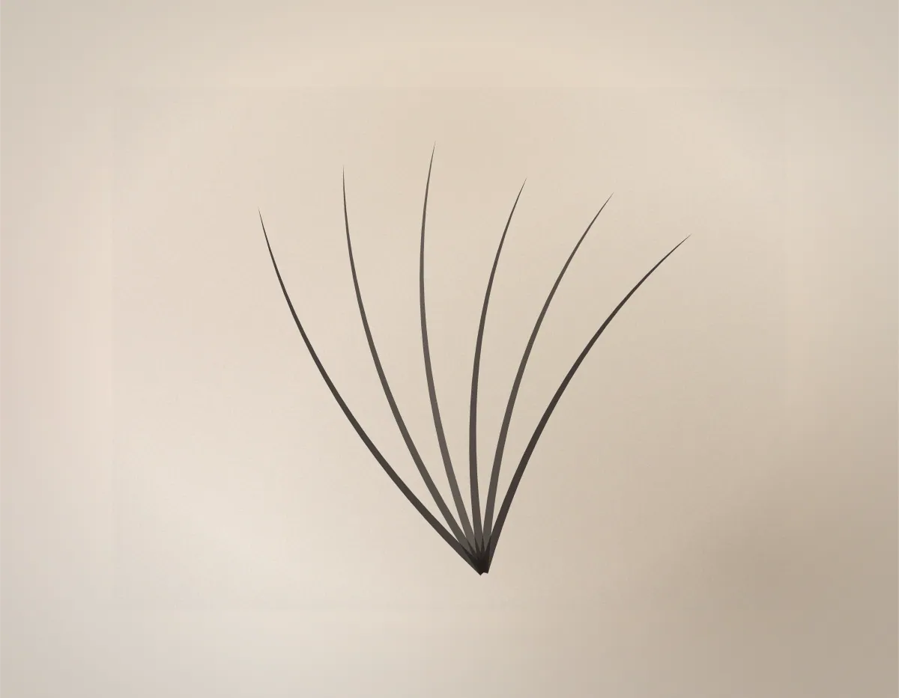

Как делаем
Изоляция каждой ресницы
Волосок ставится на одну свою ресницу и ни на что больше. Если приклеить его сразу к двум, они начнут тянуть друг друга при росте — отсюда заломы, зуд и ресницы, выпадающие парами. Проверяю изоляцию щёточкой перед каждым веером.
